👁️ Retinal Explainability Suite: Side-by-Side SOTA Benchmark
Comprehensive comparison of 5 Explainable AI algorithms (Grad-CAM, Grad-CAM++, Layer-CAM, Score-CAM, Integrated Gradients) on Diabetic Retinopathy fundus images.
Sample: 007-5999-300.jpg (GT Grade 3 vs Pred Grade 3)
Predicted: Grade 3 (Severe NPDR) | Confidence: 42.68%
1x6 Side-by-Side Quick Comparison:
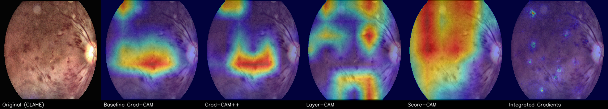
Detailed 4-Panel Reports for Each Algorithm:
Baseline Grad-CAM — Coarse 7x7 regional activation
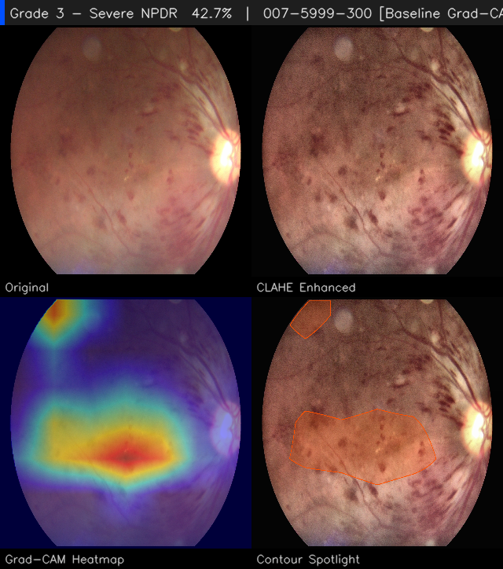
Grad-CAM++ — Higher order gradients for multiple lesions
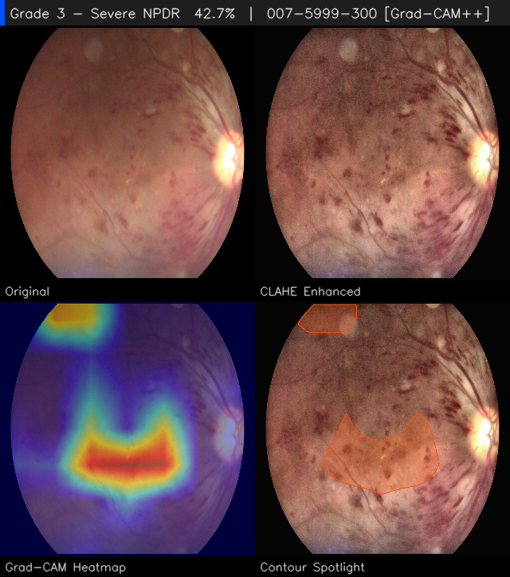
Layer-CAM — Fine-grained spatial gradient preservation
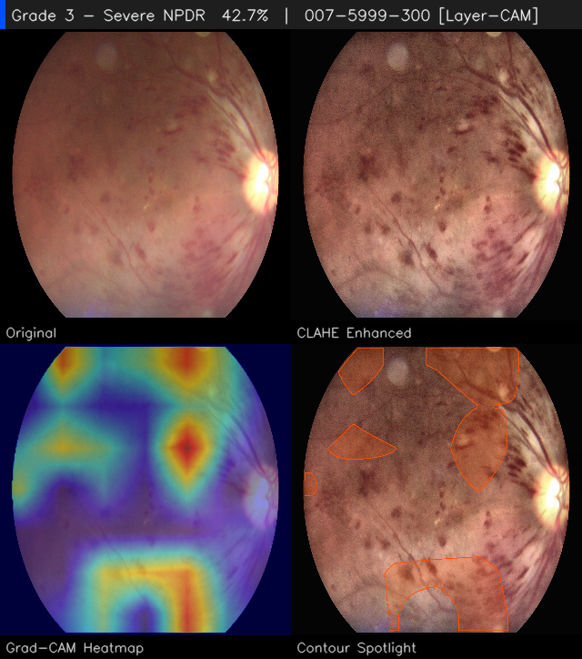
Score-CAM — Gradient-free perturbation confidence scoring
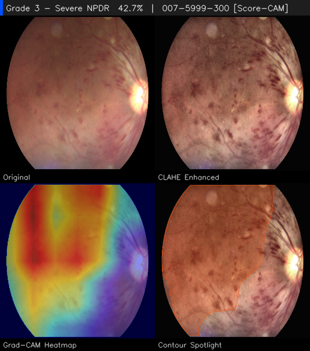
Integrated Gradients — Pixel-level axiomatic attribution
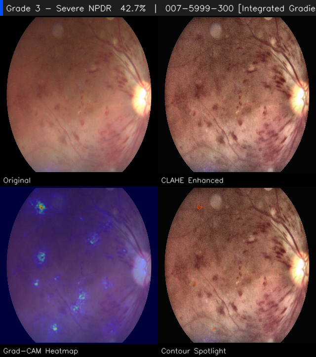
Sample: 007-6962-400.jpg (GT Grade 4 vs Pred Grade 4)
Predicted: Grade 4 (Proliferative DR) | Confidence: 95.89%
1x6 Side-by-Side Quick Comparison:
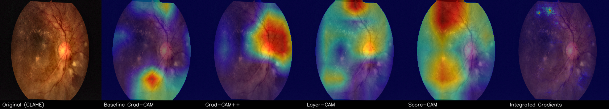
Detailed 4-Panel Reports for Each Algorithm:
Baseline Grad-CAM — Coarse 7x7 regional activation
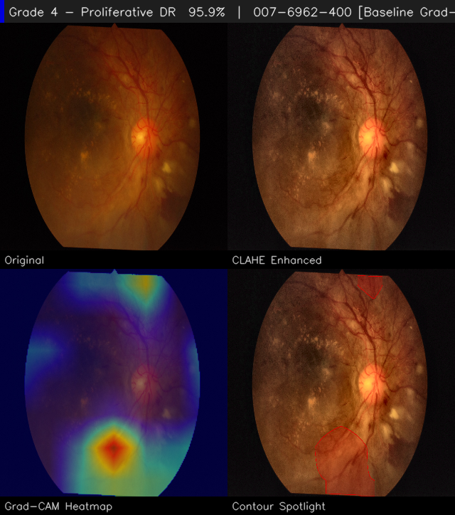
Grad-CAM++ — Higher order gradients for multiple lesions
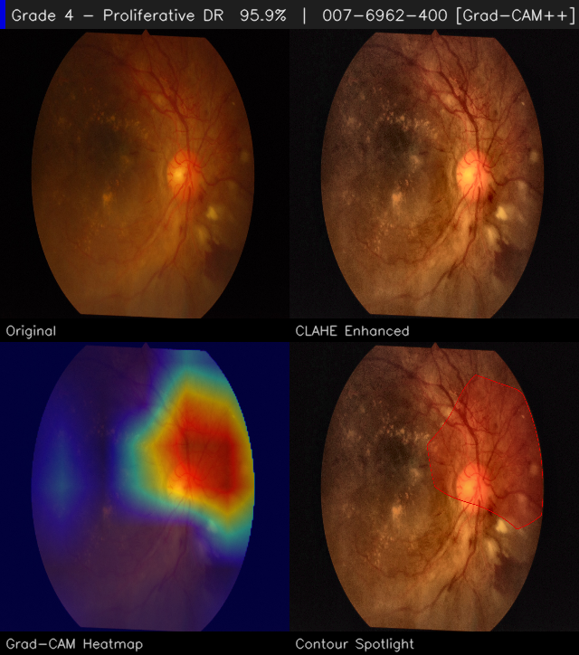
Layer-CAM — Fine-grained spatial gradient preservation
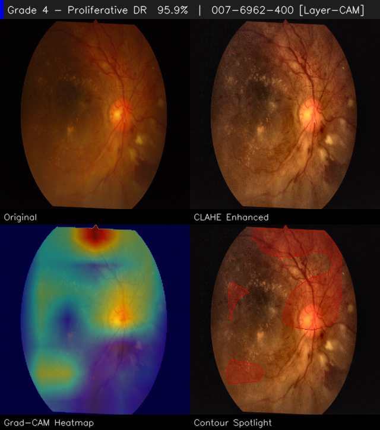
Score-CAM — Gradient-free perturbation confidence scoring
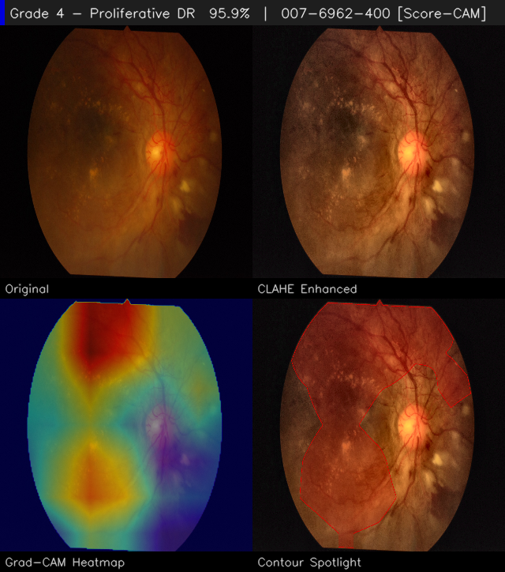
Integrated Gradients — Pixel-level axiomatic attribution
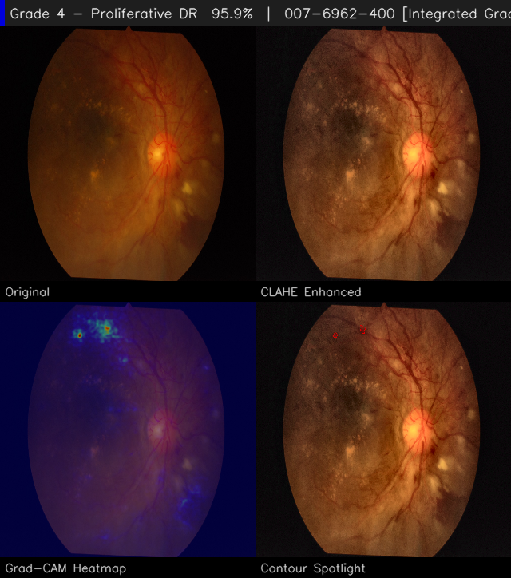